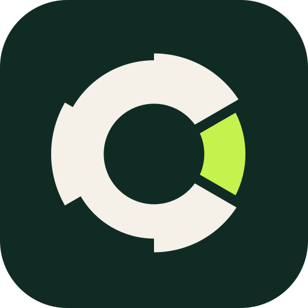

Ascolta
Intervista il tuo team via chat o voce e legge i documenti che decidi di condividere: processi, OKR, verbali, board.
Un software con IA che diagnostica i processi della tua startup, prepara la documentazione ISO e ti dice cosa migliorare per primo per convincere gli investitori. Pensato per le startup, anche per le PMI.
Prenota una chiamata
Diagnosi di Rutalia SolutionsCosa analizzano gli agenti
Quattro agenti specializzati percorrono la tua azienda come farebbe un bravo consulente di operations. Tu vedi solo il risultato.
Intervista il tuo team via chat o voce e legge i documenti che decidi di condividere: processi, OKR, verbali, board.
Ogni evidenza viene assegnata a un'area del framework. Niente resta un'opinione isolata: tutto ha una fonte.
Valuta ogni processo su quattro dimensioni: cosa è definito, come viene eseguito, se viene misurato e se reggerà quando crescerete.
Ti consegna un piano con priorità per impatto e sforzo, con responsabili suggeriti e il perché di ogni passo.
Ciò che è normale in pre-seed è un campanello d'allarme in una Serie A. Ozmetra confronta i tuoi processi con ciò che ci si aspetta nella tua fase.
Prima di iniziare adattiamo domande, pesi e fonti al tuo settore, alle tue dimensioni e a ciò che ti preoccupa di più.
Ripeti la valutazione ogni trimestre e guarda cosa è migliorato.
Decidi tu quali fonti e persone partecipano.
Valuta più startup con lo stesso framework e individua dove ognuna ha bisogno di aiuto.
Ozmetra trasforma ciò che il tuo team fa già nella documentazione richiesta dalle norme ISO. Arrivi all'audit, e al round di investimento, con tutto in ordine.
Ozmetra ti prepara all'audit. La certificazione è rilasciata da un organismo di certificazione accreditato.
Un modello di maturità a livelli. Ogni livello aggiunge solo i processi che la tua azienda può sostenere in quel momento, senza la burocrazia di una grande impresa.
E quando la startup cresce, prosegue con il modello per PMI senza ripartire da zero.
Ogni attività è valutata con evidenze: non raggiunta, raggiunta in parte o raggiunta del tutto.
Ozmetra si basa su due framework di valutazione sviluppati all'Università Rey Juan Carlos, fondati sulla famiglia di norme ISO/IEC 33000 e convalidati in aziende reali.
Ispirato a
Processi valutati, investitori più tranquilli
Un'azienda che valuta e migliora i propri processi interni è più competitiva, accede più facilmente ai finanziamenti ed è più attraente per gli investitori.
Tre domande, senza registrazione. Ti diamo un primo indizio e ti teniamo un posto per il lancio.
Con 11 a 50 personas, los procesos que funcionaban de palabra empiezan a romperse.
Te escribiremos cuando abramos la siguiente tanda.
Il team informazioni clienti ti chiamerà nella fascia oraria scelta.
Una sessione iniziale per configurare gli agenti e l'accesso alle fonti che vuoi includere. Interviste e letture sono compito loro.
Solo le persone che autorizzi tu. Scegli quali documenti, strumenti e persone fanno parte della diagnosi.
Gli agenti lavorano in parallelo e tengono traccia di ogni conclusione, così la diagnosi si può ripetere ogni trimestre per misurare i progressi.
Non abbiamo ancora pubblicato i prezzi. Chi è in lista d'attesa li conoscerà per primo.
Sì. Il framework si adatta alla tua fase, quindi in un team piccolo si concentra su ciò che vi aiuterà a crescere senza rompervi.
Certo. Lasciaci il tuo numero e il team informazioni clienti ti chiamerà. Prenota una chiamata
No. Ti aiutiamo a preparare i processi, la documentazione e le evidenze richiesti da norme come ISO 9001 o ISO/IEC 20000-1. La certificazione è rilasciata da un organismo accreditato dopo il suo audit.
Sui framework LightSME e LightStartup, pubblicati su una rivista e in un congresso scientifici, fondati sulla famiglia ISO/IEC 33000 e convalidati con casi reali di PMI e startup.